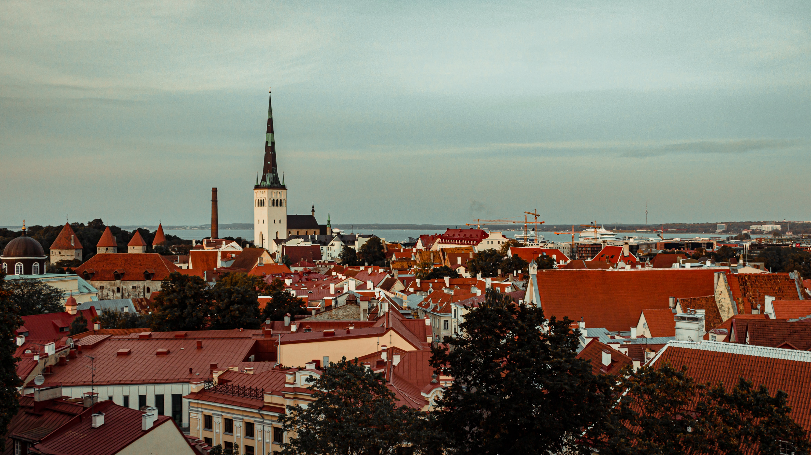
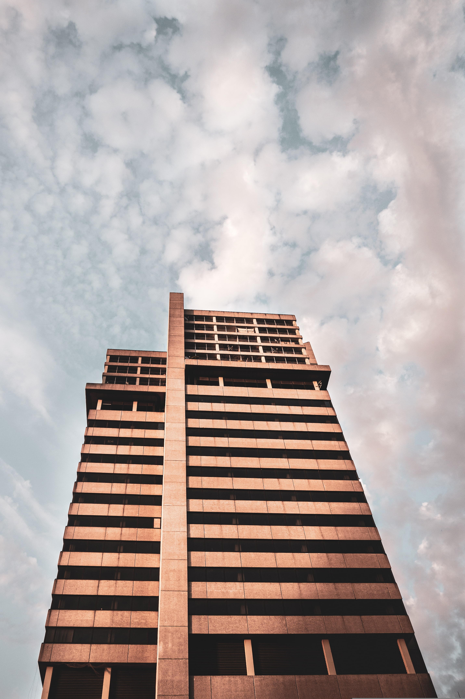

Photo
Nice picture
Links
To see more of us
place visted
Aug 10th 2018

I live in Newquay. It’s a small town on the Atlantic coast in the south of England. It has got great beaches and is the best place to surf in the UK. There are lots of surf schools where you can learn how to surf. I go surfing with my friends every weekend. My favourite place is Fistral Beach. I love Newquay because there are lots of other things to do as well as surfing. If you like water sports, you can go kayaking, water-skiing or coasteering. Coasteering is different because it is rock climbing, jumping into the sea and swimming in the same activity, but you should always go with a special instructor. If you like animals you can also visit the Blue Reef Aquarium and see lots of different fish and even sharks. You can also go horse riding on the beach or visit Newquay Zoo. There are lots of other attractions too like mini golf and bowling. Come and see for yourself!
England
England was a sovereign state until 1707 AD (it included Wales for much of that), when it united with Scotland to create what was called the Kingdom of Great Britain. Then, less than 100 years later (1801), it united with Ireland to become the United Kingdom of Great Britain and Ireland. In 1922, the Free State of Ireland broke off, but in 1927, Northern Ireland came back under the pact. This is what we now know as the United Kingdom (technically called the United Kingdom of Great Britain and Northern Ireland). As you can tell, the history of the modern United Kingdom is a bit scattered and it has taken hundreds of years to come to the point that it is at currently. The United Kingdom has a set up similar to the United States – it’s an overarching government (a constitutional monarchy), but instead of having “states,” they have individual countries, one of which is England.
London
London is the capital and largest city of England and the United Kingdom. The city stands on the River Thames in the south-east of England, at the head of its 50-mile (80 km) estuary leading to the North Sea. London has been a major settlement for two millennia. Londinium was founded by the Romans.
